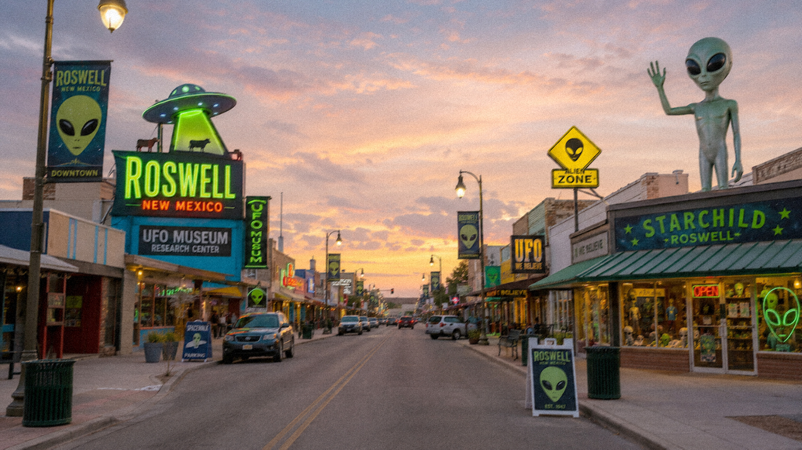

Si Roswell fuera solo la historia de un globo caído, nadie estaría hablando de ello en 2026. Hay algo más funcionando. El incidente se convirtió en un contenedor cultural donde caben cosas que van mucho más allá de los escombros de Mac Brazel: la desconfianza hacia el gobierno, el miedo a estar solos en el universo, el atractivo de los secretos, y la certeza — compartida por millones — de que los que mandan saben cosas que no nos cuentan.
El caso Roswell es hoy más un fenómeno social que un misterio sin resolver. Cada generación lo ha reinterpretado a través del lenguaje de su época: en los ochenta era un thriller de espionaje; en los noventa, era Expedientes X; en los dos mil, era el símbolo del cinismo post-11S; hoy, con la desclasificación PURSUE y los debates sobre UAP en el Congreso, es parte de una conversación global sobre transparencia institucional.
«En inglés se usa "Roswell" como sinónimo de cualquier encubrimiento OVNI. El caso ha trascendido el evento para convertirse en una categoría mental.»
— La Redacción · Análisis editorialLas razones del mito

El misterio sin cierre
Sin una versión pública simple y temprana, quedó espacio para especular. Las contradicciones entre el comunicado del 8 de julio y su desmentido del 9 — aunque perfectamente explicables — crearon la impresión de que «algo se oculta».
Desconfianza institucional
Roswell nació en la Guerra Fría, el clima perfecto para sospechar del gobierno. Esa desconfianza no ha disminuido. Si acaso, ha crecido. El caso es el espejo donde cada generación proyecta sus propias sospechas sobre el poder.
La maquinaria cultural
Películas (Roswell, 1994), series (The X-Files, Roswell: New Mexico), documentales, podcasts, libros — la industria del entretenimiento tiene un interés económico real en mantener vivo el misterio. Cada nuevo producto renueva el mito.
La pregunta de fondo
Roswell toca algo más profundo que cualquier globo militar: ¿estamos solos? Es la pregunta más antigua de la humanidad, y Roswell la tiene incorporada. Mientras no tengamos una respuesta definitiva al Paradox de Fermi, Roswell tendrá audiencia.
Los archivos destruidos
Los mensajes entrantes y salientes del RAAF de julio de 1947 fueron dados de baja. La destrucción de registros — rutinaria en aquella burocracia militar — alimenta la teoría del encubrimiento. Probar una ausencia es imposible.
El turismo y la industria
Roswell (Nuevo México) organiza una Feria OVNI anual que atrae turistas de todo el mundo. Hoteles, museos, tiendas de souvenirs: hay una economía local construida sobre el mito. El incentivo para mantenerlo vivo es también financiero.
La evolución cultural del mito
1947–77
El silencio
El caso duerme. Sin prensa, sin debates. Solo el Proyecto Libro Azul lo registra.
1978–89
El revival ufólogo
Friedman publica las entrevistas a Marcel. Libros de conspiración populariza el encubrimiento.
1990–99
Mainstream cultural
X-Files (1993), película Roswell (1994), «autopsia alienígena» falsa (1995). Roswell entra en la cultura pop global.
2000–19
Escepticismo y revisión
Los informes oficiales circulan más. Surge el análisis crítico online. Pero el mito sigue fuerte en documentales y series.
2020–hoy
La era UAP
El Congreso toma en serio los UAP. PURSUE desclasifica archivos. Roswell se convierte en el precedente histórico de un nuevo debate institucional.
Lo que sabemos y lo que seguimos sin saber
Lo que sabemos con certeza
- Algo cayó en Corona, NM, en julio de 1947
- Los materiales eran consistentes con globos aeronáuticos militares
- El comunicado del «disco volador» duró menos de 24 horas
- El Proyecto Mogul usaba exactamente esos materiales en esa zona
- No existe ningún artefacto físico verificable de origen no terrestre
- Los informes GAO (1995) y USAF (1994, 1997) coinciden en la misma explicación
Lo que sigue siendo especulación
- El destino exacto de todos los materiales recogidos en 1947
- Las conversaciones privadas dentro del RAAF esos días
- Si hubo testimonios de trabajadores de la base que nunca se publicaron
- La correspondencia destruida del 509º Bombardment Group
- Por qué el comunicado se emitió en primer lugar si era «solo un globo»
- Si el cambio de versión fue torpeza burocrática o algo más
// Preguntas que siguen abiertas
// Lagunas documentales pendientes
- ¿Por qué la oficina del RAAF emitió el comunicado del «disco volador» sin autorización del alto mando? ¿Error o decisión?
- Los mensajes entrantes y salientes del RAAF de julio 1947 fueron destruidos. ¿Rutina burocrática o algo más?
- ¿Cuántos globos Mogul cayeron en esa área ese verano? Los registros del proyecto siguen siendo de difícil acceso.
- Los 30+ años de silencio entre el incidente y los primeros testimonios: ¿disciplina militar, o simplemente nada que contar?
- Con la desclasificación PURSUE en curso, ¿aparecerá algún documento nuevo sobre Roswell que cambie lo que sabemos?
Roswell en el contexto de 2026
En mayo de 2026, el gobierno de los Estados Unidos publicó bajo el programa PURSUE más de doscientos archivos sobre Fenómenos Aéreos No Identificados — la desclasificación UAP más amplia de la historia. El sitio recibió más de mil millones de visitas en sus primeras semanas. Ninguno de esos documentos menciona Roswell como caso no resuelto. El incidente de 1947 pertenece a otra categoría: los «casos resueltos» no se publican, por definición.
// Conexión · Roswell y el debate UAP actual
El incidente de 1947 es el antecedente histórico que más frecuentemente se invoca en los debates contemporáneos sobre UAP. Pero hay una diferencia crucial: los archivos PURSUE son, explícitamente, casos que el gobierno no ha podido explicar. Roswell, según los registros oficiales, sí tiene explicación. Lo que Roswell aporta al debate de 2026 no es evidencia — es contexto cultural: demuestra que la desconfianza institucional tiene raíces profundas, y que la demanda de transparencia es real y legítima, incluso cuando los datos concretos resultan más mundanos de lo esperado.
Hay algo honesto en reconocer que Roswell nos dice más sobre nosotros que sobre el universo. La historia de un globo meteorológico secreto que durante treinta años se transformó en el mayor misterio OVNI de la historia es, en sí misma, una historia extraordinaria. No porque haya alienígenas. Sino porque revela con qué facilidad el secretismo gubernamental, el silencio documental y el deseo humano de respuestas producen mitos que ningún informe oficial puede extinguir del todo.
// Conclusión editorial
La explicación más aceptada para Roswell — globos militares secretos del Proyecto Mogul — está documentada, es técnicamente sólida, y coincide con todos los materiales disponibles. Lo que cayó en Nuevo México en julio de 1947 no era una nave extraterrestre. Lo que vino después — el mito, la industria, la desconfianza, las preguntas abiertas — es un fenómeno cultural de primera magnitud que no requiere extraterrestres para ser fascinante. Roswell sigue vigente porque la pregunta real que hace no es «¿aterrizaron alienígenas?» sino algo más incómodo: ¿cuándo nos miente el gobierno, y cómo lo sabemos?
// Comentarios